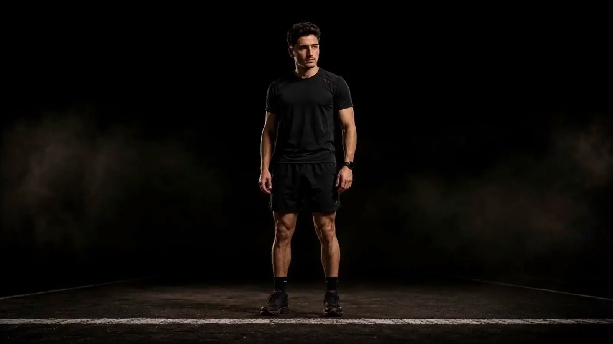
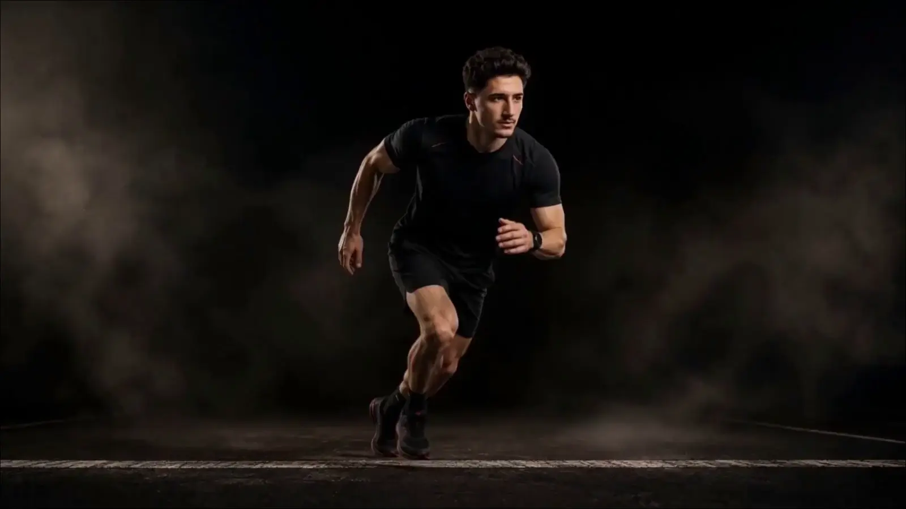
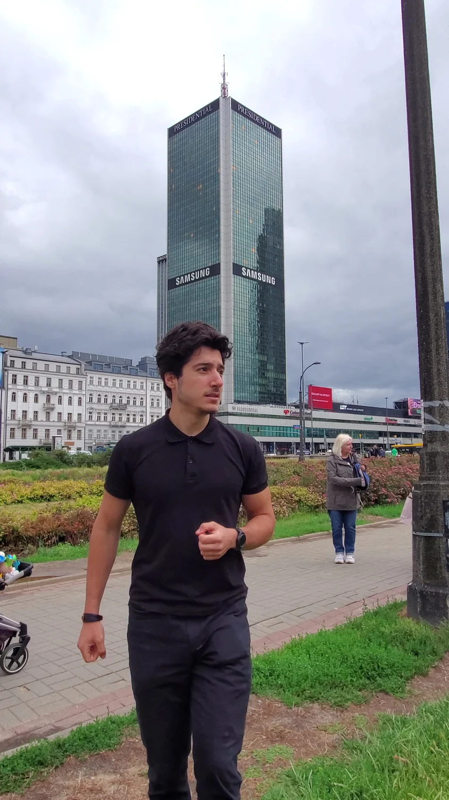
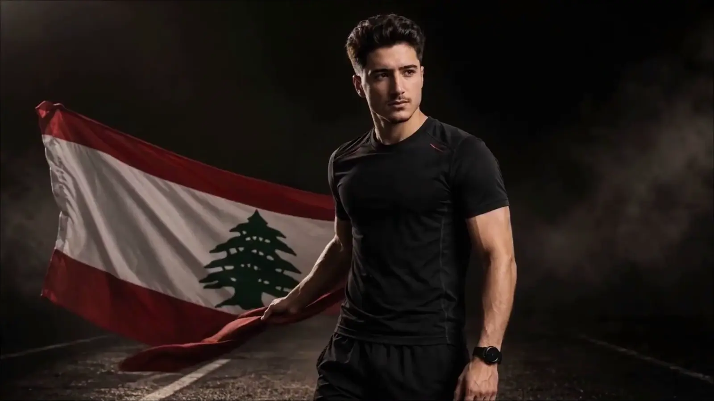

Run one marathon from the start.

Guinness World Recordstitle targetIRONMANrace format
Toufic Abou Ali · Lebanese founder-athlete
Six continents.
Six full IRONMAN races.
One world-record attempt.
The full challenge
1,356 km.
Six global chapters.
Each race contains a 3.8 km swim, 180 km bike, and 42.2 km marathon.
One attempt to make history for Lebanon.
Targeting the youngest male to complete official full-distance IRONMAN races on six continents.
World-record application, qualifying requirements, and verification remain subject to confirmation. This independent campaign is not presented as endorsed by IRONMAN or Guinness World Records.
Understand it in seconds
One full IRONMAN is 226 km in one day.
The marathon is the final discipline—not the entire race.
01 · Swim3.8 km
Open water
02 · Bike180 km
Long-course cycling
03 · Run42.2 km
A full marathon
One race226 km
The clock continues through every transition.
vs
Swim and cycle first. Then run the same marathon distance.
Six swims22.8 km
Six bike courses1,080 km
Six marathons253.2 km
Total race distance1,356 km
Distance source: IRONMAN official race format ↗

The target
Not one finish.
Six complete chapters.
Different continents. Different climates. The same standard of proof.
Where it started
IRONMAN 70.3 Warsaw proved I could finish—and showed me what I had to rebuild.
On June 7, 2026, seven days before turning 20, Toufic completed his first IRONMAN 70.3 in 6:08:15.
The courage and endurance were present. Outdoor cycling, open-water preparation, brick training, fueling, race simulation, and technical execution were not yet at the required level.
{kind=link}
Outdoor bike handling, open-water practice, brick sessions, race simulation, structured fueling and transition repetition.
Toufic could keep moving through mistakes, cramps, falls and low hydration without walking the run.
Professional coaching, medical oversight, technical cycling, open-water preparation, recovery planning and controlled race selection.
Professional response
Toughness got the first finish. A system must deliver the next six.
The mission is approved race by race only when preparation and logistics can support execution.
Train the sport
Swim, bike, run, transitions, bricks and race simulation built as one plan.
Protect availability
Medical screening, injury control, sleep, recovery and load management.
Practice the plan
Fluids, sodium, carbohydrates and aid-station execution tested before race day.
Control the details
Entry, visa, bike transport, insurance, accommodation, evidence and backups.

Why Toufic can execute
Founder discipline applied to endurance.
Toufic is a Lebanese founder-athlete and the Founder & CEO of Sira.
The mission demands the same skills as building a company: systems, people, deadlines, logistics, proof, adaptation and responsibility under pressure.
25+Person operating team
60K+Career community
15M+Impressions across supplied company metrics
{kind=link}

Lebanese identity
Born in Lebanon.
Not as decoration. As the identity carried through the pressure, travel and finish lines.
Built to race globally.
Six continents.
One Lebanese flag.
Your brand can enter the mission before the first full-distance chapter begins.
Six-continent route
The continents are public. Each race is announced only when it is ready to execute.
Race choice depends on final qualifying rules, entry, visa, training periodization, recovery, travel, funding, academic commitments, and medical and coaching approval.
Selected continent
North America
One qualifying full IRONMAN chapter. The final event is announced only when entry, rules, travel, recovery and funding are controlled.
World-record ambition
The window is real.
The current public benchmark is 21 years and 167 days. Toufic’s working deadline is November 27, 2027.
The Guinness World Records application, evidence requirements, and final qualifying rules remain pending. Public record pages may change before they are updated. View the current public record page ↗
Working deadline27.11.2027
—days remaining
Brand opportunity
Six chapters create more than one day of visibility.
A partner can build a campaign across preparation, travel, race week, race day, recovery, content, employees, customers and proof.
Lead the mission
Take the strongest role across all six chapters.
Own one continent
Build a complete story around one race chapter.
Remove one real cost
Support travel, equipment, health, recovery, production or another required function.
Activate your people
Use talks, challenges, content, product integration and private updates.
Start with the outcome
Tell me the result your company wants.
I will build the exact proposal around that goal—not force a standard package.